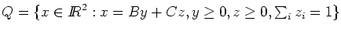
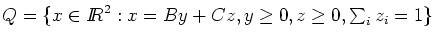
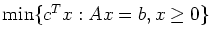

Due: Thursday, February 14, 2002.
- 1.
- Show that a convex cone has at most one extreme point,
namely the origin.
- 2.
- Let the polyhedron
 .
Graph this polyhedron, and hence find matrices B and C such that
.
.
Graph this polyhedron, and hence find matrices B and C such that
.
- 3.
- Construct a linear programming problem in the standard form

which has an optimal basis,
but, for this basis, not all the reduced costs are nonnegative.
- 4.
- Consider the linear programming problem
Show that this problem has unbounded objective function value by
using the revised simplex algorithm starting from the basic feasible
solution
x = [0,2,1,1,0]T. Use the eta factorization of the
inverse, so you should first factorize the initial basis B as
LB=U, where L is lower triangular and U is upper triangular.
On subsequent iterations, update the basis matrix by using eta
matrices. What is the ray that you find?
(Hint: you should find the ray on the second iteration.)
- 5.
- The
next sheet
is part of a paper which was submitted to
Mathematical Programming. The authors propose an algorithm for linear
programming and then make some claims about the performance of this
algorithm. Do these claims seem reasonable? Justify your answer.
John Mitchell
2002-02-04